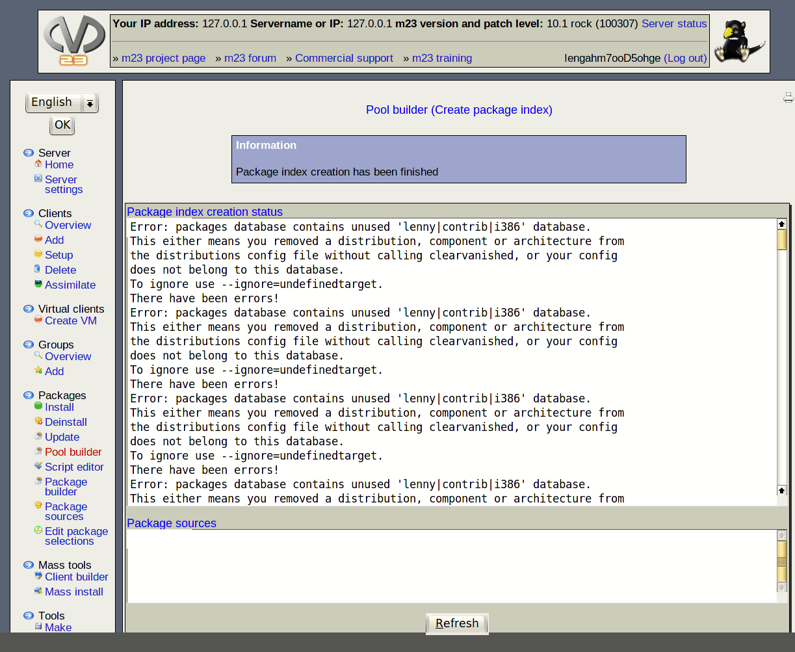

Above you can see the status of package-index generation. Try hitting ''Refresh'' now and then and you will see the most current status of this process. When the index generation has been finished successfully it is possible to use a package source.
Package sources: here you can see the package source list which corresponds to a pool. To install a client in this pool copy the corresponding line into the package source list of the client you wish to install.
root
2015-04-30